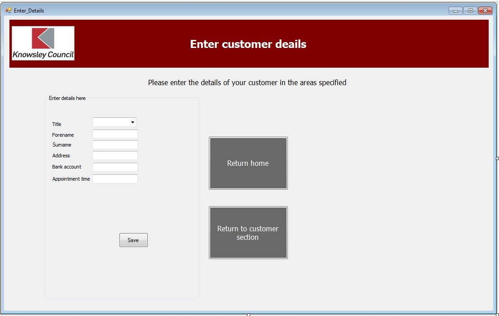
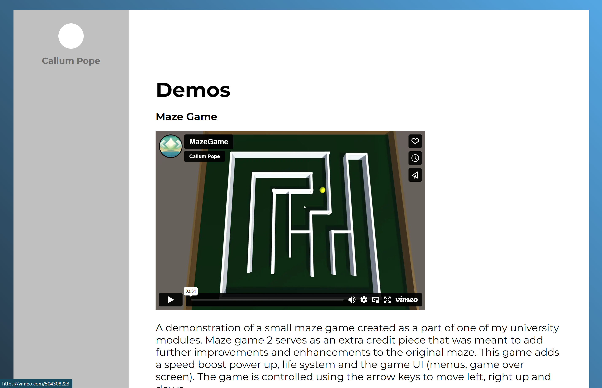
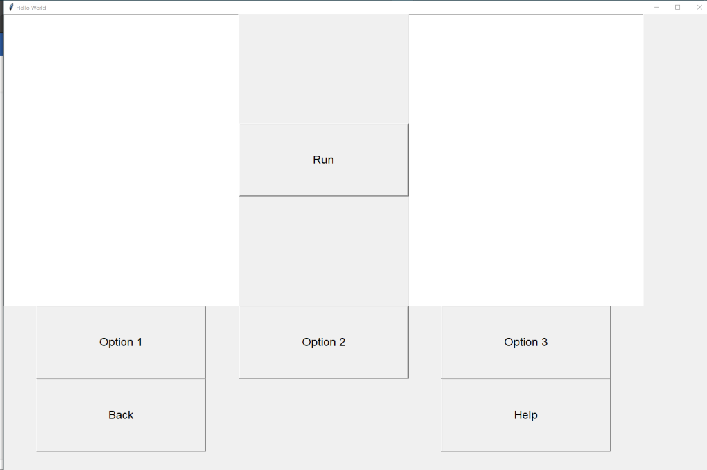
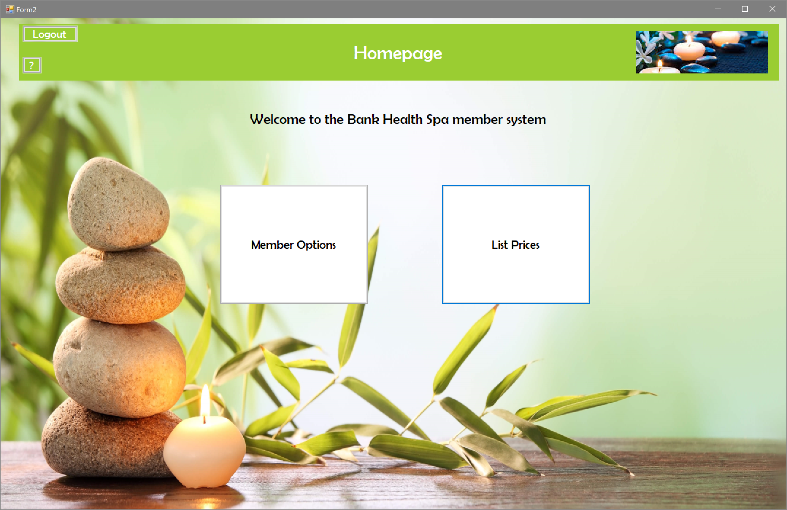

Other Projects
Customer details and bookings application
One of the first projects completed as a part my end of year project in my second year of college. This app required a "real world" scenario. For this, the workplace of one of my parents, with the solution being developed in Microsoft's Visual Studio. A scenario had to be provided for this project, for which a solution had to be developed. The scenario was that the council required for a system to be created that can manage customers in a queue. Customer details had to be stored in a database and allow for customers to be queued and dequeued though buttons (adding/removing records). This database had to hold approximately 90 customers at a time, with this ammount being created to test if the program could handle records at this capacity efficiently. This application consisted of three sections : the home screen, customer view where customers could view their details by entering their customer number and serach for their details, the staff page (edit records, delete records, search records by ID, en ter records and view details). The staff section required a login page. Login details could be entered and stored into the system. When logging in, the program would check to see if the username/password match those that are stored in the system, if correct the user would be logged in.
Text based adventure game
This game was created as a part of my C++ module in my HND course. This is a text based adventure game where the player navigates their way through the story of Star Wars Ep 4. Players have to create a profile in order to play their game, doing so will create a save file and allow for their progress to be saved including any choices they make and objects/items that they obtain. All of this can be viewed when seraching for the save file. this save file can also be deleted by selecting the option from the main menu and enetering the player name. A demo of this is available on the demos page. Each level makes use of different theming/use of colur to differeniate them to the player. The menu splash screen makes use of an custom title logo created through use of a starred border. This was created using multiple for loops to determine star positions in each row/column.
Android Medical App

This app was created in my second year of University as a part of my mobile apps module. This app was created in Android Studio and works on both emulated and actual android devices. This was tested on 2 different devices: a cheaper Xiaomi device and a Samsung device. The app is a medical app that allows users to store their medical information and various functions can be carried out if any results enetered are cause for concern. There are various pages to this app. Users can register with a username and password, these being saved to the device/system. When logged in successfully, the user can view/edit their details, enter any medical readings/information and view/change settings. When entering medical details, if readings are abnormal, the user will be prompted to alert their GP by opening the email app on their phone this process will occur automatically..
HTML sites
I have created 2 HTML based websites. One as part of my HND course and the other being my original portfolio site. My first webpage created was only a simple layout comprising of a login, registration and a quiz page. This website would hold user details and allow them to log into the site and gain access to the quiz. This quiz was multiple choice making use of radio buttons to allow users to choose their answers. The second website, the old portfolio site, contains many embedded video links and uploaded images. Design of this website was aided with the use of Adobe XD.
Mini Java Application

Throughout the course of my HND course, I have created many Java programs ranging in their complexity. Most of these are small scale and focus on a single function or component of java ranging from simple loops and statements through to Java forms and array/SQL integrations. These smaller programs all build towards the final project which was a Java database with MySQL integration. This program allowed users to enter, edit, view and delete data about various countries. Each button on the screen opens a new java form window where functionality can be carried out. For editing and entry, fields are verified both inside java and in MySQL, with some entries also only having set options with drop down boxes and tick boxes. In order for this program to work correctly, a link between JCreator and MySQL had to be established so that the java application can access the SQL database in order to retrieve records.
Python Gesture Based Program
This program was created as part of a team project in University where a multi-window application had to be created that would utilise gesture tracking. I was tasked with creating and designing all windows, screens and non gesture inputs for testing purposes with the other team member being tasked with the interaction code using a microsoft kinect. The interface was designed and created through coding with python. Originally, the plan was to use Kinect integration for the gesture control, but due to complications within the team and the inability to meet face to face due to the pandemic, this was ultimately unfinished.
Bank Health Spa
This program was created for a fictional health spa application that allows users to login, view/edit their membership details and view prices of the activities within the spa. Details are entered through the use of forms where users enter their data into text boxes These activities have discounts for each membership tier (Free, Bronze, Silver, Gold) and calculations have been used to both show the prices of these tiers and apply their discounts to the activities. this allows users to compare the different membership options and see the activities that are supported and discounted by each tier.
Portfolio rework/redesign
This portfolio is a newer version of original portfolio site, again created from the ground up using HTML and CSS. This version will includes different navigation bar/menu positioning, different formatting for images included/text/videos and includes the new contact page as well as updates to the original pages including renamed pages to be more suitable to the content and the inclusion of both a header and footer to each page including internal navigation and external social links.
Project using Free to use Sumo Digital Assets
Found using the Sumo Academy page, these assets are being used to create a 2D game within Visual Studio. Development will be aided with tutorials and documents provided by Sumo Digital on their GitHub page.